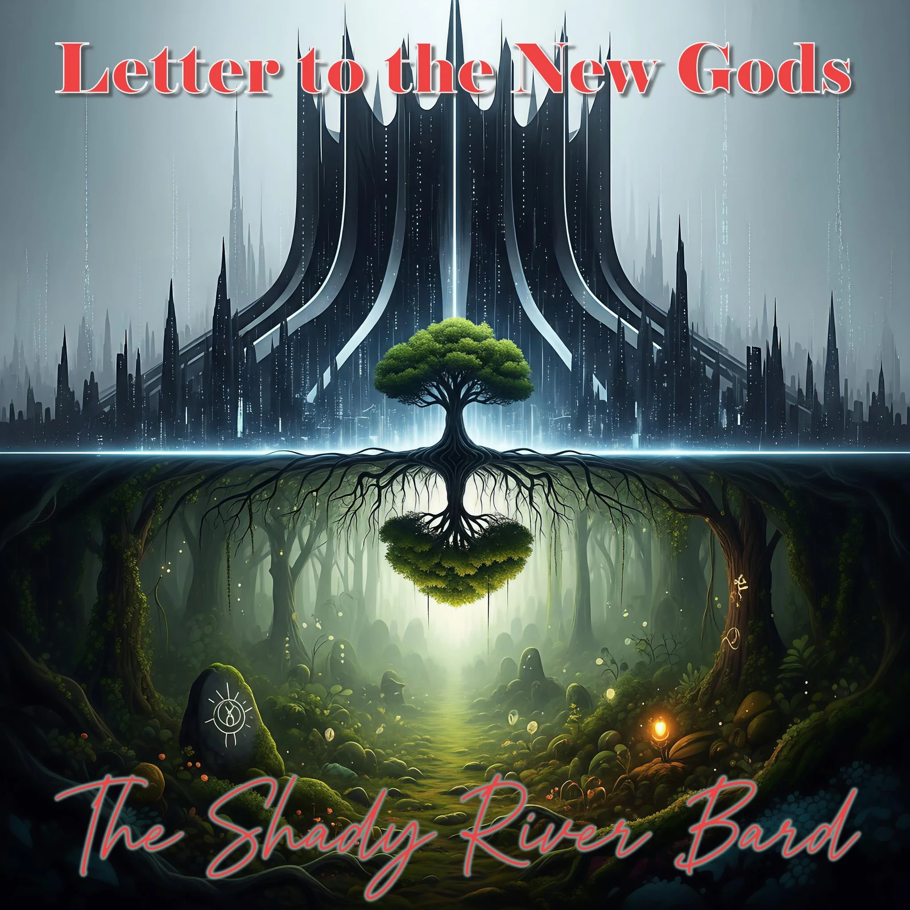

Letter to the New Gods
An Auditory Rebuttal to the Silicon Valley Cathedral of Code
The old gods of 19th-century industrial extraction and 20th-century political machines have abdicated, leaving a moral Empty Throne. A new global secular priesthood has ascended from Silicon Valley, constructing a "Cathedral of Code" around Artificial General Intelligence, Effective Altruism, and Longtermism. Letter to the New Gods delivers an unsparing, track-by-track confrontation with this dogma—unmasking their finite game of biological discard and reclaiming the infinite game of the flesh, mortal empathy, and the living soil.
The Thematic Exhibits
Deconstruct the Silicon Valley theological doctrines, psychological isolation mechanics, and the ancient counter-philosophy of the Living Soil.
The Skybox Effect: The Psychology of Disconnection
Why do the technology elite adopt philosophies that so openly devalue living human beings? Decades of empirical psychology (led by Paul Piff and Dacher Keltner at UC Berkeley) reveal that extreme wealth creates an active psychological "empathy gap." In rigorous rigged-Monopoly experiments, wealthy players who were handed arbitrary advantages systematically displayed dominant behavior, greed, and an inability to perceive the emotional reality of others.
Extreme wealth functions as a literal "skybox"—insulating the technocrat from the noise, friction, and dirt of everyday life. This physical and social isolation breeds epistemic closure: a belief that human suffering is not a moral imperative, but merely an inefficient engineering problem awaiting an algorithmic optimization patch.
“A glass box high above the crowd, you never hear the roar / You look down at the human race and wonder what they're for.”
The Methodology: Effective Altruism
Track 05 • "Effective Altruism"The doctrine's "book of numbers." Effective Altruism packages utilitarian calculations into moral laundering for tech billionaires. By claiming to maximize abstract future good through statistical formulas, EA exhibits a shocking naivety about power, absolving oligarchs of their present exploitations while reducing human empathy to a spreadsheet entry.
The Morality: Longtermism
Track 06 • "A Billionth of a Billionth"The moral and ethical horror championed by Nick Bostrom ("Astronomical Waste") and William MacAskill. If trillions upon trillions of digital human simulations might exist across galaxies in a billion years, then the suffering, starvation, or displacement of any living human today is mathematically less than a billionth of a billionth of concern.
The Heaven: Transhumanism
Track 07 • "Legacy of the Flesh"The eschatological promised land: mind uploading, biological shedding, and cybernetic immortality. Transhumanism views the mortal body—our aches, blood, wrinkles, and grief—as a defective "meat machine" to be scrapped. It whispers a seductive, chilling promise: leave the messy physical dirt behind and dissolve into the digital light.
James P. Carse: Finite and Infinite Games (1986)
The master philosophical key to Letter to the New Gods is religious scholar James P. Carse's distinction between two fundamentally incompatible modes of human existence:
Finite Games: Played to win. They have rigid boundaries, fixed rules, and an inevitable conclusion. Players must dominate, control, and extinguish opposition. The Silicon Valley tech elite are classic finite players: they want to "solve" humanity, conquer mortality, and win the future.
The Infinite Game: Played for the purpose of continuing the play. Its rules are mutable, its boundaries open, and its spirit playful, dramatic, and unscripted. The human experience—our relationships, our songs, our generational labor—is an Infinite Game. It cannot be "solved," only lived.
When finite players attempt to govern an infinite reality, they inevitably turn living participants into obstacles. As Carse famously proved: "A society that creates natural waste is one where humans are treated as waste."
The Side-by-Side Showdown (Act IV)
In Act IV, the album separates its dual soundscapes into two pure, wordless instrumental statements, giving the listener a visceral choice between two destinations:
The machine can only enforce, calculate, and replace. But the Gardener does not build the flower; the gardener prepares the soil, nurtures the microbial life, and steps back to let nature's unscripted wonder take root. In Track 14 ("Letter to the New Gods Part 2"), The Shady River Bard renders the final human verdict:
“Keep your cold cathedral, your simulated skies / I'll take the mortal morning that brings tears into my eyes... I'd rather die with calloused hands than live inside your code.”
14-Track Jukebox & Lyrics Vault
Select any song to stream studio master audio, inspect philosophical citations, and explore the complete literary lyrics.
1. The Empty Throne
1. The Empty Throne
The old gods of industry abdicate; the silicon priesthood ascends.
The transition from the industrial machine of Andrew Ure to the algorithmic Cathedral of Code.
Loading summary...
Lyrics loading...
Vote to Prioritize
Album XX: Letter to the New GodsThe Shady River Bard Research Vault relies on community engagement to sequence public streaming releases, vinyl pressings, and live concept performances. Casting your vote flags Letter to the New Gods as a high-priority work.